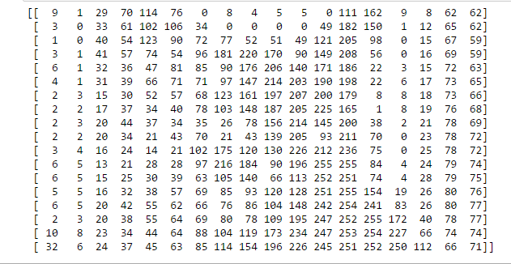

How do computers see an image ?
We all love to see beautiful images, but have you ever thought how do computers see an image? In this blog post, I will give a thorough explanation of how do computers deal with an image.

Consider the above image, a normal human can easily tell that, there is a cat in the image. But, can computers really see the cat ? The answer is no, computers see a matrix of numbers ( between 0 to 255 ). Broadly, we can classify images as grayscale images or color images. First of all, I will discuss grayscale images then color. Above image is a grayscale image means each pixel represents the brightness of a pixel. Know more about pixel . Let me first show you what computers see in the case of above image.
I've resized above image to 18 * 18 in order to make it easy to understand. Unlike us, the computers see an image as a 2D matrix. You might have heard people saying that this image is of size 1800*700 or 1300 * 700. This size shows width and height of an image. In other words, if size is 1300 * 700 then there are 1300 pixels horizontally and 700 vertically. That means there are total 910000 (1300*700) pixels. If the image is the size of 700 * 500 then the dimensionality of the matrix will be ( 700, 500). Here, each element(pixel) in the matrix represents the intensity of brightness in that pixel . Here, 0 represents black and 255 represents white color.
Color Images
In grayscale images, each pixel represents the intensity of only one color. In other words, it has one channel. Whereas in color images we have 3 channels RGB (red, green, blue). Standard digital camera will have 3 (RGB) channels.

As you can see in above image, the color image is composed of three channels red, green and blue. Now the question is, how do computers see this image? Again, the answer is they see the matrix. now the next question should be, how do we represent this image in the matrix since it has 3 channels, unlike grayscale images where we had only one channel. In this case, we will have 3D matrix. We have one matrix for one channel, but in this case, we'll have three matrices stacked onto each other, that's why it's 3D. Dimensionality of 700 * 700 color image will be (700, 700, 3). Let's say, the first matrix represents red channel, then each element of that matrix represents an intensity of red color in that pixel, likewise in green and blue. In general, each pixel in color image has three numbers (0 to 255) associated with it. These numbers represent intensity of red, green and blue color in that particular pixel.
Conclusion
Computers see an image as a matrix. Grayscale images have one channel ( gray ), thus we can represent grayscale images in the 2D matrix, where each element represents the intensity of brightness in that particular pixel. Remember, 0 means black and 255 means white. Grayscale images have one channel, whereas color images have three channels RGB (red, green, blue). We can represent color images in the 3D matrix where the depth will be 3.